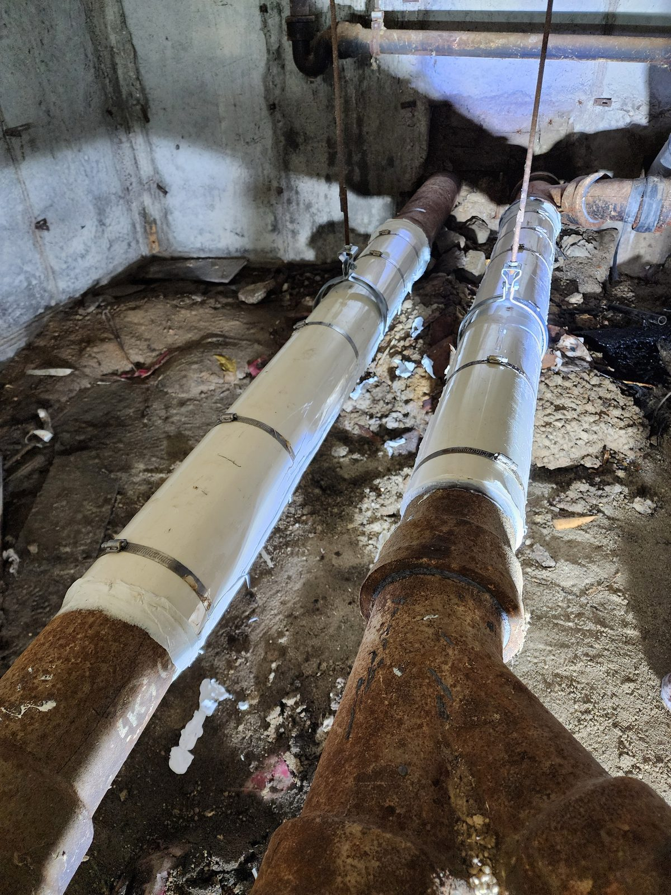
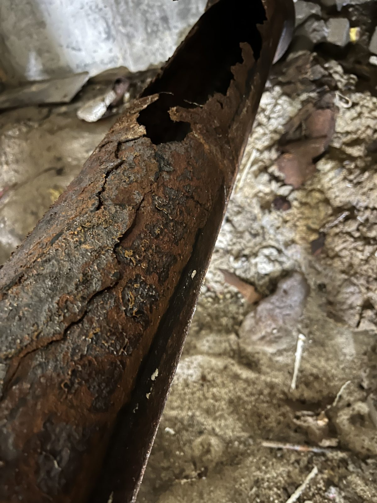
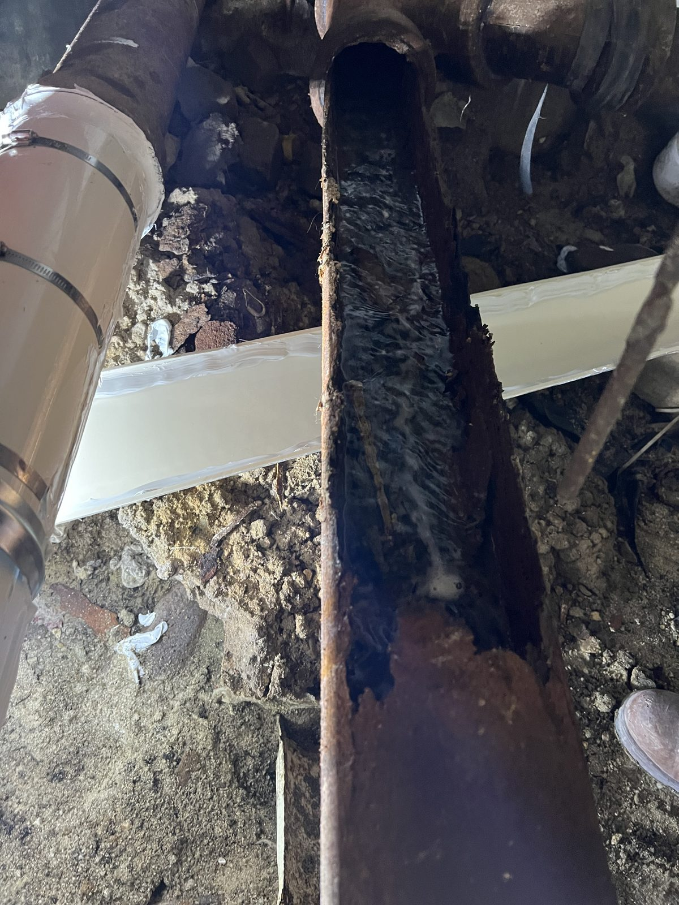
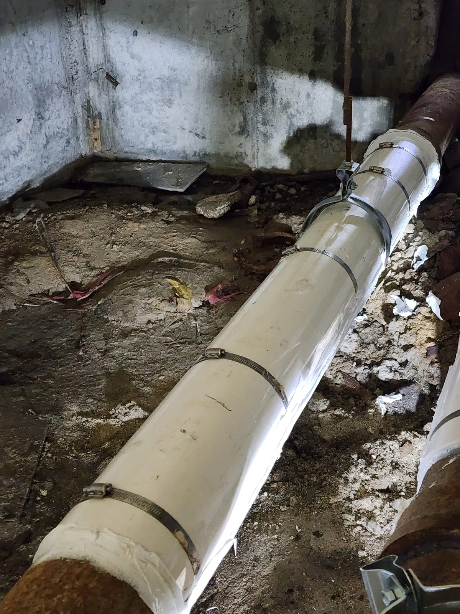
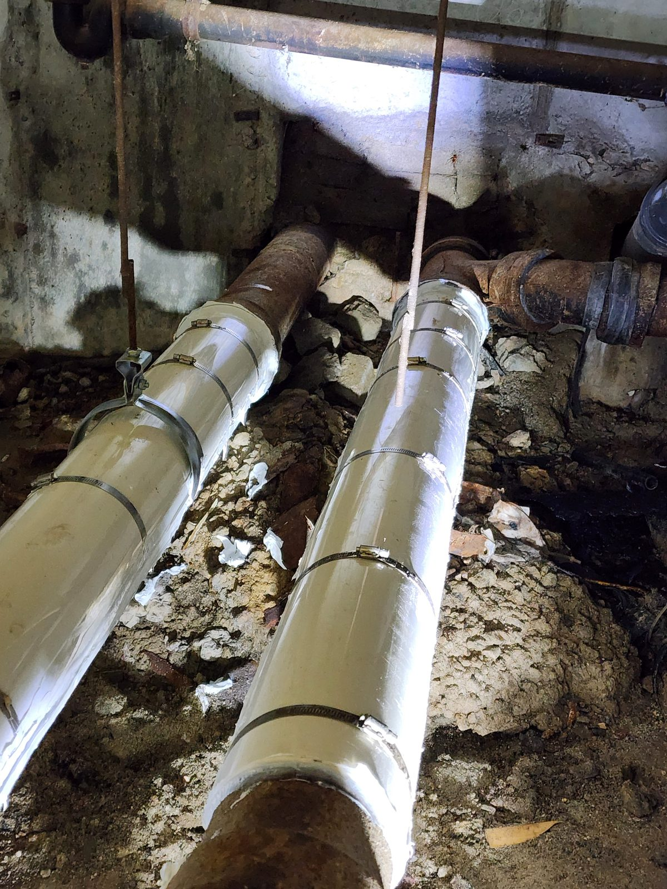
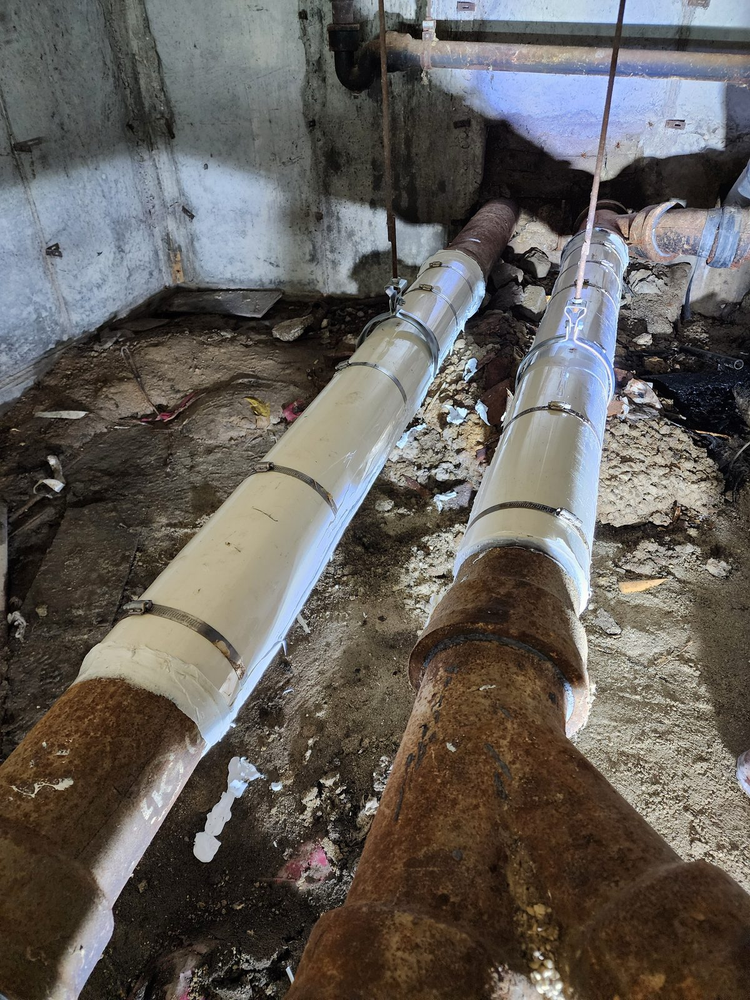

대전 유원아파트 지하실 주철관 보수, 벌어진 관을 슬리브로 감싼 과정

현장 작업 한눈에 보기
- 현장
- 대전 유원아파트 지하실
- 문제
- 주철관 관벽 벌어짐과
부식 구간 확인 - 작업
- 관 내부·절개면 확인
슬리브 설치 후 금속 밴드 고정 - 결과
- 두 배관 라인에 슬리브 설치
기존 주철관 연결 상태 기록
유원아파트 지하실에서 관벽이 벌어진 주철관을 확인했습니다. 손상 구간과 관 내부를 살핀 뒤 두 배관에 보수 슬리브와 금속 밴드를 설치한 모습을 순서대로 소개합니다.
1. 길게 벌어진 주철관 관벽
대전 유원아파트 지하실에서 진행한 주철관 보수입니다. 첫 사진에는 관벽이 길게 벌어진 부분과 주변 부식 표면이 보입니다.
배관 전체 모습에 앞서 실제 손상 부위를 가까이 보여 드립니다.

2. 절개된 관 안쪽 살펴보기
다음은 절개된 주철관 내부와 가장자리입니다. 바깥면만 볼 때는 드러나지 않던 안쪽 표면이 보입니다.
보수할 구간의 내부와 절개면을 확인한 단계입니다.

3. 보수 슬리브를 씌우고 밴드 고정
손상 구간을 흰색 보수 슬리브로 감싸고 금속 밴드로 고정했습니다. 슬리브는 기존 주철관을 감싸 이어 주는 보수 부재입니다.
배관 전체를 새것으로 바꾼 작업과는 구분됩니다.

4. 나란한 두 배관에 각각 설치
보수 범위는 나란히 지나가는 두 배관이었습니다. 각각의 관에 슬리브와 고정 밴드가 설치된 모습입니다.
한쪽 근접 사진 다음에 두 배관을 함께 보면 손본 위치를 더 쉽게 파악할 수 있습니다.

5. 기존 관과 이어진 마무리 상태
마지막 사진에는 두 보수 구간과 기존 주철관 연결부가 함께 보입니다. 이번 공사는 이 두 라인에 슬리브를 설치한 보수입니다.
유사한 파손을 발견하셨다면 손상 부위와 주변 배관 전체를 함께 촬영해 점검을 요청해 주세요.

부분 보수와 전체 교체를 구분합니다
사진에 소개한 작업은 기존 주철관에 슬리브를 설치하고 금속 밴드로 고정한 부분 보수입니다. 두 라인을 손봤지만 배관 전체를 새 관으로 바꾼 사례는 아닙니다.
방법은 관 재질·손상 범위·부식·접근 조건을 보고 정합니다. 이 글에는 선택 사유를 적은 상세 점검표나 작업 후 시험 결과가 없어 모든 주철관에 같은 방법이 맞는다고 안내하지 않습니다.